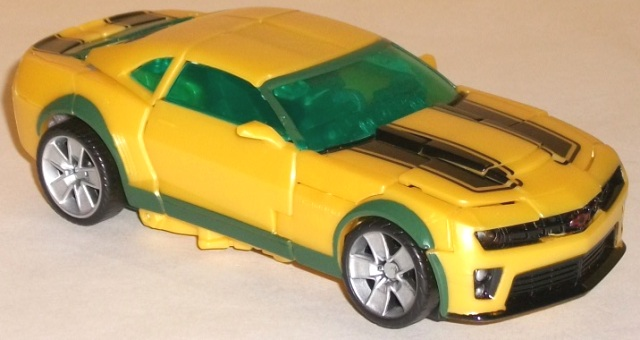

Allegiance : Decepticon
Size : Legend
Difficulty of Transformation : Very Easy
Color Scheme : Pale orangish tan, light milky orange, and some dark bluish gray, muddy brownish orange, dull metallic blue, and light orange
Individual Rating : 7.1
Set Price : $15 (U.S.)
(NOTE: Because this set is composed of repaints,
this is not a full-blown review. This mainly covers any changes made to
the set and the color scheme, and merely compares it to the original versions
of these molds. For a review on the original Cannon Bumblebee mold, go
here
.
For a review on the original mass-release TF1 Legends Blackout mold-- the
one used for Grindor in this set-- go
here
.)
 Grindor
Grindor
Allegiance
: Decepticon
Size
: Legend
Difficulty of Transformation
: Very
Easy
Color Scheme
: Pale orangish tan,
light milky orange, and some dark bluish gray, muddy brownish orange, dull
metallic blue, and light orange
Individual Rating
: 7.1
Although still named
Grindor, this redeco seems to be a bit of a loose homage to G1 Sandstorm.
The tan and orange, despite being fairly similar colors, go together surprisingly
well. What really makes the color scheme, however, is the contrast of those
colors wit the dark bluish dray and, in robot mode, the metallic blue.
Both help give the color scheme a bit of "dark" in it, and particularly
the blue in robot mode goes quite well with the tan and orange. I have
to admit that this color scheme, as light as it is, doesn't tend to go
well with Grindor's rather demonic-looking face., however The nice brownish
"camo deco" on the sides of the 'copter mode is a nice touch, and helps
to differentiate this redeco from other versions of the mold-- though I
wish it was used a bit more, like on the top of the vehicle mode.
No mold changes have
been made to this version of Grindor.
 Bumblebee
Bumblebee

Allegiance
: Autobot
Size
: Deluxe
Difficulty of Transformation
: Medium
Color Scheme
: Dull yellow, dark
bluish green, black, and some moderately light milky gray, light sky blue,
dark metallic gunmetal gray, translucent dark greenish blue, light red,
and silver
Individual Rating
: 8.7
For all of the repaints
Bumblebee has gotten lately, most of them tend to be "themed"; sand-weathered,
stealth camo, rally car, etcetera. This repaint, on the other hand, kinda...
defies explanation. The most obvious difference between this toy and the
original Cannon Bumblebee mold is that a lot of the black trim and plastic
has been replaced by a dark bluish-green. That theme carries over to the
windows, which are roughly the same color, only translucent and with a
bit more emphasis on the blue. The yellow and gray plastic used is maybe
a SHADE duller (and in my opinion, not quite as good-looking), but there's
barely any difference in that respect. His general deco job-- like his
car paint apps, his face, and the like-- remain the same in this release.
There's a few new irregular paint apps along some of his robot parts in
that bluish green color, but what exactly they're supposed to be eludes
me. Is this Swamp Moss Bumblebee? Drainage Ditch Bumblebee? I have no idea,
and the bio doesn't really help in that respect either. Granted, the bluish
green contrasts fairly well with the yellow and black, so I don't really
have any COMPLAINTS about the color scheme, other than that it's kinda
weird.
No mold changes have
been made to this version of Bumblebee.
In the unlikely event that you're reading this, want this set, and don't have a deluxe movie Bumblebee mold, the Bombing Run Battle Vs. Pack gets a recommendation, despite the obvious huge size discrepancy between the two toys. Grindor has a nice homage deco that's still original enough to stand out. I wish I could say the same about the larger toy in the set, who is just another slight redeco of Bumblebee's same ol' color scheme-- though it's by no means a bad color scheme. If you have the Bumblebee mold, though, than this isn't really an easy purchase even for Movie mold fans, given that the only toy that's likely to get your attention and/or want is the tiny one in the 2-pack.
Reviews by Beastbot